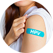
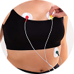
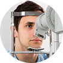
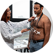

Identifique problemas antes que se tornem graves
A Importância dos Exames de Rotina
Os exames preventivos são fundamentais para detectar doenças em estágios iniciais, quando o tratamento é mais eficaz e menos invasivo. Manter uma rotina de check-ups regulares pode salvar vidas e garantir uma melhor qualidade de vida para você e sua família.
Proteja toda a família com exames regulares
Viva mais e melhor com prevenção adequada
Prevenção Feminina
- Vacinação em dia (HPV, tétano, hepatite B, influenza, covid)
- Consulta ginecológica inicial (orientação sobre saúde menstrual, contracepção e prevenção de ISTs)
- Exames de sangue e urina anuais (hemograma, glicose, colesterol, função renal e hepática)
- Check-up odontológico e oftalmológico
- Exame dermatológico (rastreamento de câncer de pele)

A partir dos 25 anos- Papanicolau (preventivo) – a cada 3 anos se não houver alterações
- Rastreio do HPV se indicado

A partir dos 30 anos- Check-up anual com clínico geral
- Exames de sangue mais completos
- Aferição da pressão arterial e glicemia
- Exames cardiovasculares iniciais se houver histórico familiar ou fatores de risco
- Mamografia anual ou bianual (dependendo do histórico familiar)
- Exames cardiovasculares mais detalhados (eletrocardiograma, teste ergométrico, ecocardiograma se indicado)
- Colonoscopia (a cada 5 anos, ou antes se houver risco)
- Continuidade dos exames laboratoriais e ginecológicos
- Monitoramento para osteoporose (densitometria óssea pode ser indicada)
Prevenção Masculina
- Autoexame testicular (mensal, após o banho)
- Atenção a alterações: tamanho, dor, nódulos
- Vacinação em dia (hepatite B, tétano, HPV, influenza, covid)

A partir dos 20 anos- Exames de sangue e urina
- Avaliação odontológica e oftalmológica

A partir dos 30 anos- Check-up anual com clínico geral
- Exames de sangue mais completos
- Aferição da pressão arterial
- Glicemia de jejum
- Avaliação dermatológica
- Avaliação cardiovascular inicial
- Exames cardiovasculares
- Exames de sangue e urina anuais continuam
- Se houver histórico familiar de câncer de cólon ou próstata, antecipar rastreamento
- Colonoscopia (a cada 5 anos)
- Exame de próstata (PSA + toque retal)
- Continuidade dos exames laboratoriais e cardiovasculares
Alertas Importantes
Autoexame das Mamas
Realize o autoexame das mamas todo mês, entre o 7º e 10º dia após o início da menstruação. Para mulheres na menopausa, escolha um dia fixo.
Autoexame dos Testículos
Homens e pessoas com testículos devem realizar o autoexame mensalmente, de preferência após o banho, para identificar alterações como nódulos ou inchaços.
Vacinas em Dia
Todos devem manter a carteira de vacinação atualizada. Algumas vacinas precisam de reforço na idade adulta, como tétano, difteria e hepatite B.
Saúde Mental
Cuidar da mente é tão importante quanto do corpo. Reserve momentos para relaxar, dormir bem e buscar apoio se sentir necessidade.